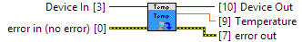

MinTemperature and MaxTemperature.
|
|
Device In Device # Identification |

|
|
error in (no error) error in can accept error information wired from VIs previously called. |

|
|
status status is TRUE (X) if an error occurred or FALSE (checkmark) to indicate a warning or that no error occurred. Right-click the error in control on the front panel and select Explain Error or Explain Warning from the shortcut menu for more information about the error. |

|
|
code code is the error or warning code. Right-click the error in control on the front panel and select Explain Error or Explain Warning from the shortcut menu for more information about the error. |

|
|
source source describes the origin of the error or warning. Right-click the error in control on the front panel and select Explain Error or Explain Warning from the shortcut menu for more information about the error. |

|
|
Device Out Same as Device In |

|
|
error out error out passes error or warning information out of a VI to be used by other VIs. |

|
|
status status is TRUE (X) if an error occurred or FALSE (checkmark) to indicate a warning or that no error occurred. Right-click the error out control on the front panel and select Explain Error or Explain Warning from the shortcut menu for more information about the error. |

|
|
code code is the error or warning code. Right-click the error out control on the front panel and select Explain Error or Explain Warning from the shortcut menu for more information about the error. |

|
|
source source describes the origin of the error or warning. Right-click the error out control on the front panel and select Explain Error or Explain Warning from the shortcut menu for more information about the error. |

|
|
Temperature The temperature value Units: degrees celsius (°C) 1045_0 (ver: 100, 101) Temperature Sensor (IR): Min: -70 Max: 380 1045_1 (ver: 101) Temperature Sensor (IR): Min: -70 Max: 380
1045_0 (ver: 100, 101) Temperature Sensor (IC): Min: -40 Max: 125 1045_1 (ver: 101) Temperature Sensor (IC): Min: -40 Max: 125
1048_0 (ver: 100, 101, 102) Thermocouple Input:
1048_0 (ver: 100, 101, 102) Temperature Sensor (IC): Min: -55 Max: 150
1051_0 (ver: 100) Thermocouple Input:
1051_0 (ver: 100) Temperature Sensor (IC): Min: -55 Max: 150
1051_0 (ver: 200, 201, 202) Thermocouple Input:
1051_0 (ver: 200, 201, 202) Temperature Sensor (IC): Min: -55 Max: 150
1051_1 (ver: 300) Thermocouple Input:
1051_1 (ver: 300) Temperature Sensor (IC): Min: -55 Max: 150
1051_2 (ver: 400, 401, 402) Thermocouple Input:
1051_2 (ver: 400, 401, 402) Temperature Sensor (IC): Min: -55 Max: 150
DCC1000_0 (ver: 115) Temperature Sensor: Min: -40 Max: 125
DCC1000_0 (ver: 204, 205, 206) Temperature Sensor: Min: -40 Max: 125
DCC1100_0 (ver: 113, 114) Temperature Sensor: Min: -40 Max: 125
HUM1000_0 (ver: 104, 105) Temperature Sensor: Min: -40 Max: 85
SAF1000_0 (ver: 101, 102) Temperature Sensor: Min: -40 Max: 125
TMP1000_0 (ver: 105, 107) Temperature Sensor (IC): Min: -40 Max: 85
TMP1100_0 (ver: 103, 105) Thermocouple Input: Min: -270 Max: 1370
TMP1100_0 (ver: 103, 105) Temperature Sensor (IC): Min: -40 Max: 85
TMP1101_0 (ver: 104, 106) Thermocouple Input: Min: -270 Max: 1370
TMP1101_0 (ver: 104, 106) Temperature Sensor (IC): Min: -40 Max: 85
TMP1200_0 (ver: 104, 105, 106) RTD input: Min: -200 Max: 850 |